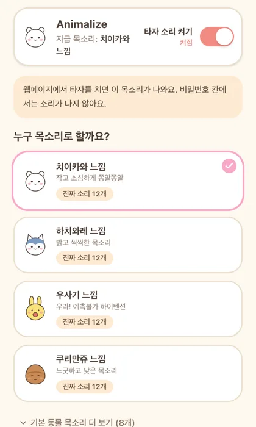

눌러서 들어보세요
카드를 누르면 그 캐릭터 소리가 나와요. 앱에서는 키를 칠 때마다 이런 소리가 하나씩 바뀌어 가며 나와요.
이 밖에 동물의 숲 주민 목소리(남자 4가지, 여자 4가지)도 있고, 높낮이와 빠르기를 바꿔 나만의 목소리도 만들 수 있어요.
내 컴퓨터에 맞는 파일을 받으세요
전부 무료예요. 무엇을 받아야 할지 모르겠으면 "내 컴퓨터" 표시가 붙은 것을 받으면 돼요.
내 Mac이 M1~M4인지 Intel인지 모르겠어요
화면 왼쪽 위 사과 모양을 누르고 이 Mac에 관하여를 누르세요. 칩 줄에 "Apple M1"처럼 M이 보이면 M1~M4용을, 프로세서 줄에 "Intel"이 보이면 Intel용을 받으면 돼요.
Linux는 다운로드 페이지에서 .deb, .AppImage, .rpm 중 하나를 받으세요.
설치하는 방법
받은 파일 열기
다운로드 폴더에서
Animalize_…dmg파일을 두 번 누르세요.응용 프로그램으로 옮기기
창이 뜨면 Animalize 아이콘을 옆의 Applications 폴더로 끌어다 놓으세요.
앱 열기
Launchpad나 응용 프로그램 폴더에서 Animalize를 여세요. 애플 인증을 받은 앱이라 바로 열려요.
-
'손쉬운 사용' 켜기 (한 번만)
다른 앱에서 타자 칠 때도 소리가 나려면 권한이 필요해요. 앱 위쪽에 안내가 뜨면 설정 열기를 누르고, 목록에서 Animalize 스위치를 켜 주세요.
권한을 켜지 않아도 앱 안의 "여기에 타자를 쳐 보세요" 칸에서는 소리가 나요.
받은 파일 실행
다운로드 폴더에서
Animalize_…-setup.exe파일을 두 번 누르세요.-
파란 경고창이 뜨면
"Windows의 PC 보호" 창이 뜨면 추가 정보를 누른 뒤 실행을 누르세요.
개인이 만든 무료 앱이라 마이크로소프트 유료 인증서가 없어서 뜨는 창이에요. 바이러스가 아니에요.
설치 마치기
안내대로 다음을 누르면 설치가 끝나고, 바탕화면에 Animalize가 생겨요.
압축 풀기
받은
animalize-chrome-extension.zip을 두 번 눌러 폴더로 풀어 주세요.확장 프로그램 페이지 열기
크롬 주소창에
chrome://extensions를 입력하고 엔터를 누르세요.개발자 모드 켜기
오른쪽 위의 개발자 모드 스위치를 켜세요.
폴더 고르기
압축해제된 확장 프로그램을 로드합니다를 누르고, 1번에서 푼 폴더를 고르세요.
-
고정해 두기
주소창 오른쪽 퍼즐 모양을 누르고 Animalize 옆 핀을 누르면 아이콘이 늘 보여요. 아이콘을 누르면 캐릭터를 고를 수 있어요.
비밀번호 칸에서는 소리가 나지 않아요.
쓰는 법은 세 가지가 전부예요
캐릭터 고르기
카드를 누르면 그 목소리로 바뀌고, 바로 한 번 들려줘요.
소리 크기 맞추기
소리 크기 막대를 옮기세요. "목소리만", "효과음만"으로 바꿀 수도 있어요.
끄고 싶을 때
맨 위 큰 스위치를 끄면 바로 조용해져요. Mac은 메뉴 막대, Windows는 작업 표시줄의 Animalize 아이콘에서도 끌 수 있어요.

자주 묻는 질문
다른 앱에서 타자를 쳐도 소리가 안 나요 (Mac)
'손쉬운 사용' 권한이 꺼져 있을 때 그래요. 시스템 설정 → 개인정보 보호 및 보안 → 손쉬운 사용에서 Animalize를 켜 주세요. 이미 켜져 있다면 한 번 껐다 켜고 앱을 다시 열어 보세요.
소리가 너무 커요 / 너무 작아요
앱의 소리 크기 막대로 맞추세요. 컴퓨터 전체 음량도 함께 영향을 줘요.
입력하는 내용이 어디로 전송되나요?
아니요. 어떤 키를 눌렀는지는 소리를 고르는 데만 쓰이고, 저장하거나 인터넷으로 보내지 않아요. 크롬 확장은 비밀번호 칸에서 아예 소리를 내지 않아요.
내가 가진 소리로 바꿀 수 있나요?
네. 캐릭터를 고른 뒤 "캐릭터 진짜 소리 넣기" 칸에 짧은 소리 파일(mp3, wav, m4a / 파일당 1MB 이하)을 끌어다 놓으면, 타자 칠 때 그 소리가 나요. 캐릭터마다 12개까지 넣을 수 있어요.
공식 앱인가요?
아니요. 팬이 만든 비영리 무료 앱이에요. 치이카와 캐릭터와 목소리의 권리는 원작자와 제작사에 있어요.
지우고 싶어요
Mac은 응용 프로그램 폴더에서 Animalize를 휴지통으로 옮기면 돼요. Windows는 설정 → 앱에서 Animalize를 제거하세요. 크롬은 chrome://extensions에서 삭제를 누르세요.